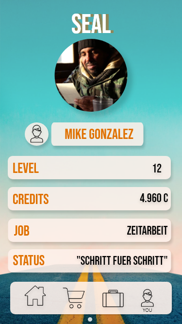
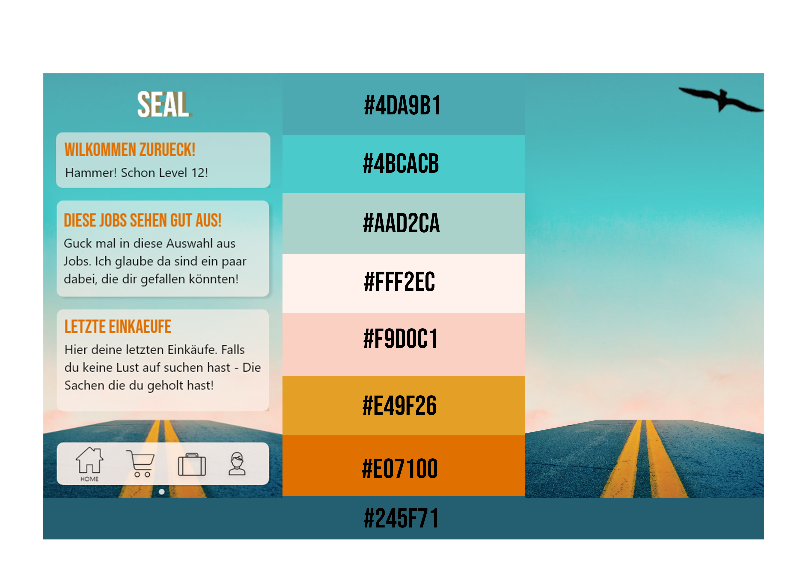
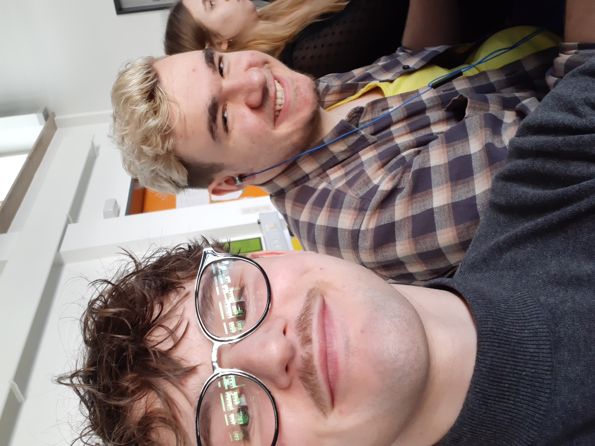

Seal
Wir gehen weiter
Value Proposition
SEAL IST ...
DIE ihre Lage verbessern wollen,
EIN soziales interaktives System,
DASS sie dabei unterstützt neuen Mut zu finden und Chancen zu nutzen.
Idee
 Wir versuchen Wohnsitzlosen die Möglichkeit zu geben, sich selbst zu helfen.
Wir versuchen Wohnsitzlosen die Möglichkeit zu geben, sich selbst zu helfen.
Jeder Mensch ist gleich viel wert und wird auf Augenhöhe behandelt. SEAL kann eine positive Interaktionskette auslösen,
bei der jeder jedem hilft und wir als Menschheit weiter vorankommen.
Grundsätzlich soll es aber keine bestehenden Systeme ersetzen, sondern ergänzen. Unabhängig der Gesellschaftsschicht oder
des sozialen Status sollen Arbeitnehmer und Arbeitgeber gemeinsam auf einer Plattform zusammen interagieren. Dies vereinfacht
den Prozess Arbeitnehmer für unterschiedliche Tätigkeiten zu engagieren und ermöglicht
leichte und schnelle Kommunikation um geeignete Arbeit zu finden.
Jede erledigte Arbeit erzeugt Credits, welche für Lebensmittel, Schlafplätze und Luxusgüter ausgegeben werden können. Je mehr
gearbeitet wird, desto mehr Level werden erhalten und desto mehr Güter und Erweiterungen werden freigeschaltet.
Letztendlich geht es hier aber nicht um Verdienst,
sondern um die Menschlichkeit, welche immer im Vordergrund stehen muss.
Botschaft & Charakter
BotschaftWir gehen weiter.
Du und Ich. Wir arbeiten gemeinsam daran Vorwärts zu gehen. Dabei braucht es beide Seiten um wirklich etwas zu bewegen.
Also gib mir die Hand und lass uns starten!
Charakter

Unsere Anwendung spiegelt den Charakter eines großen Bruder wieder, welcher einem dabei helfen soll, sich selbst zu helfen. Er ist wie ein persönlicher Coach und bester Freund zugleich.
Er weicht niemals von deiner Seite, baut dich auf wenn du nicht erfolgreich warst und unterstützt dich dabei optimistisch zu sein und nach vorne zu schauen.
Diese Gefühle entstehen, indem SEAL dich für jede erledigte Tätigkeit lobt und belohnt. Es erzeugt eine persönliche Verbindung durch viele freischaltbare Anpassungsmöglichkeiten. Die menschliche Note wird durch die vielfältige Nutzung von Profilen betont. Es erleichtert durch Vorschläge die Suche nach neuer Arbeit und erinnert dich daran niemals deinen Fokus zu verlieren und weiter voran zu gehen. “Denn es steckt mehr in dir als du denkst”, wie SEAL sagen würde.
Farben und Typografie
Farben

Typografie
Bebas Neue
Segoe UI
Wir haben diese Farben gewählt, weil sie Hoffnung und Selbstbestimmung ausstrahlen. Genau das, was unsere Botschaft beschreibt.
US
 Wir sind Florian und Max und studieren Interactive Media Design im ersten Semester am Mediencampus in Dieburg. Seal ist unser erstes gemeinsames Projekt im Fach Design.